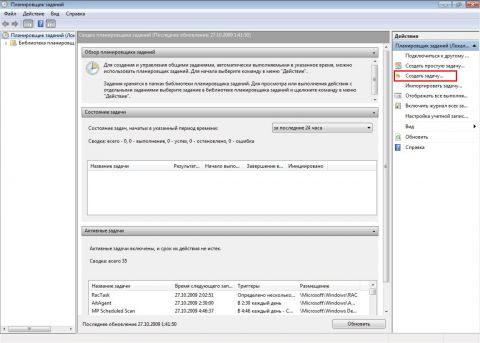
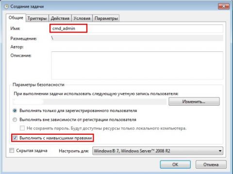
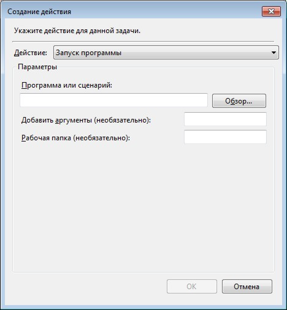
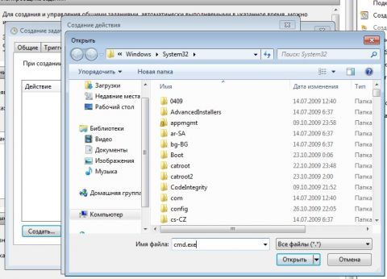
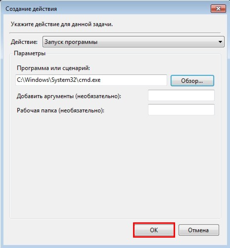
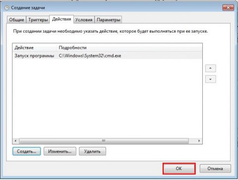
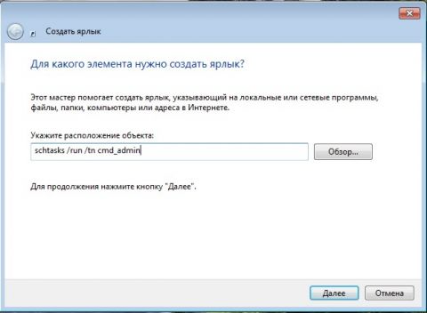

В Windows нет такого понятия, как SUID-бит, используемый в Unix/Linux. Однако, существует возможность запускать избранные программы от администратора, находясь в системе под обычным пользователем. При этом, при запуске программы, ввода пароля пользоваателем не требуется.
К сожалению, описанный ниже подход работает не всегда. Например, не удалось запустить программу "Атомсмета".
Краткое описание идеи: создается задание в пранировщике заданий, причем ему не указывается время выполнения. В настройках задания указывается, что оно должно выпониться от имени администратора. Потом создается ярлык на рабочем столе, содержащий команду запуска данного задания.
Запускаем планировщик заданий (Пуск - Все программы - Стандартные - Служебные - Планировщик заданий) и нажимаем "Создать задачу":

Указываем Имя для новой задачи и ставим флажок "Выполнять с наивысшими правами":

Переходим на вкладку Действия, нажимаем "Создать", в следующем окне нажимаем "Обзор":

Указываем путь к нужному приложению и нажимаем "Открыть":

Нажимаем "ОК":

И ещё раз "ОК":

Закрываем планировщик и переходим к созданию ярлыка. Чтобы создать ярлык на рабочем столе, щёлкаем правой клавишей мыши, выбираем "Создать" - "Ярлык":
В поле Расположение объекта вводим:
schtasks /run /tn cmd_admin
где cmd_admin - имя созданной нами задачи. Если имя содержит пробелы, его необходимо указывать в кавычках.

Задаём название ярлыка. Ярлык создан и готов к использованию.
Чтобы сменить значок - нажмите правой клавишей мыши по ярлыку, выберите "Свойства":
Теперь запуск нужного приложения от имени администратора выполняется двойным щелчком по созданному ярлыку, при этом запрос UAC не отображается и безопасность остаётся в сохранности.